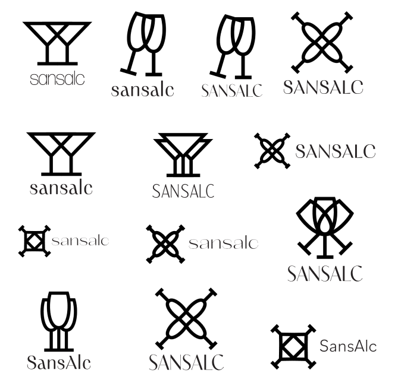
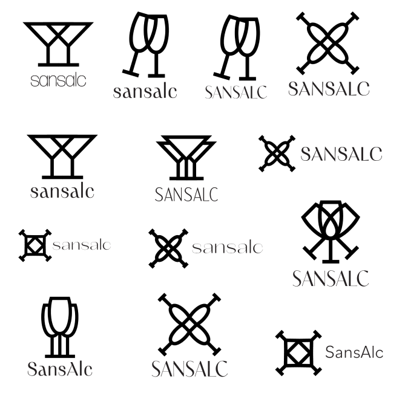

Date: Spring 2024
Skills: Brand Identity, Visual Design, Document Layout/Design
I designed a brand identity guidelines for a concept company, SansAlc to ensure consistent visual and messaging across all platforms. My role included creating the visual design, typography, color scheme, and brand usage rules.
Target Demographic: People who are on the path to being sober, people who enjoy making cocktails but don’t want to drink alcohol.
What it actually is: A community website/app that allows users to share mocktail recipes, separated into different “themes”
Pitch: Savor the flavor, skip the hangover.
Why it works: SansAlc is a platform that gives users easy access to community recipes for mocktails based on specific categories. Often times it is a social obligation to eat or socialize with a pretty drink in hand, usually alcoholic. Cocktail recipes are more easily accessible, and forces non-drinkers to create an alternative. This platform makes it easier by creating a space where people can share their own alternatives that others can try out as well. Having access to non-alcoholic alternatives gives the opportunity for people to build healthy relationships with drinking flavorful drinks.
 
